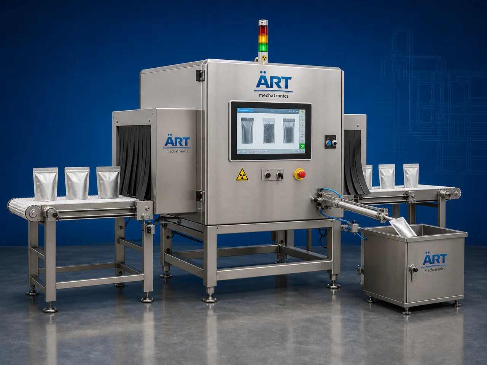

Ray Inspection Machine (Industrial X-Ray Inspection System)
An X Ray Inspection Machine, also known as an Industrial X-Ray Inspection System, Product Inspection Machine, Packaging X-Ray Scanner, or Contamination Detection System, is an advanced industrial quality inspection solution designed for automatic foreign object detection, contamination inspection, product integrity verification, missing product detection, fill level inspection, packaging quality control, and high-speed production line inspection operations across food, pharmaceutical, chemical, and FMCG industries.

About the X Ray Inspection
X ray inspection systems are widely used for:
- Foreign object detection
- Metal contamination inspection
- Glass contamination detection
- Stone and bone detection
- Missing product inspection
- Fill level verification
- Seal integrity inspection
- Packaging quality control
The machine improves:
- Product safety
- Brand protection
- Quality assurance
- Packaging compliance
- Production efficiency
- Customer trust
- Export quality standards
Industrial X ray inspection machines use:
- High-resolution X-ray imaging technology
- Intelligent image processing systems
- PLC and HMI automation controls
- Conveyor synchronized inspection systems
- Automatic rejection mechanisms
to automatically inspect products with superior accuracy and high production efficiency.
X ray inspection systems are widely used in industries such as:
Food processing industries Pharmaceutical industries Chemical industries Meat processing industries Dairy industries Snack industries Packaging industries FMCG industries
where contamination-free production, product integrity, and regulatory compliance are essential.
The machine is highly suitable for:
- Food contamination inspection
- Pharmaceutical product verification
- Packaging quality control
- Product integrity inspection
- Fill level inspection
- Export quality assurance systems
ART Mechatronics offers high-performance X ray inspection machines, engineered for continuous industrial operation, precision product inspection, reliable contamination detection, and long-term industrial quality assurance.
Working Principle of X Ray Inspection Machine
- 1. Product Feeding & Conveyor Handling Products are automatically transferred through synchronized conveyor systems for inspection operation.
- 2. X-Ray Scanning Process Machine automatically scans products using advanced X-ray imaging technology to identify foreign objects, product defects, and packaging irregularities.
Intelligent imaging systems ensure accurate inspection and smooth product handling.
- 3. Product Inspection Operation Machine handles inspection of: ✔ Snacks ✔ Spices ✔ Dairy products ✔ Frozen foods ✔ Bottles ✔ Pouches ✔ Cartons ✔ Industrial packaged products
accurately and continuously.
- 4. Contamination & Quality Inspection Process Machine detects: Metal contamination Glass fragments Stone particles Bone particles Dense foreign materials Missing products Broken products Incorrect fill levels
for safe and high-quality product assurance.
- 5. Automatic Rejection & Inspection Integration Optional systems include: Automatic reject systems Data logging systems Vision inspection integration Quality reporting systems ERP connectivity
- 6. Finished Product Discharge Approved products discharged automatically for: Packaging operations Warehouse storage Retail distribution Export shipment handling
Types of X Ray Inspection Machines
- 1. Conveyor X Ray Inspection Machine Designed for: ✔ Inline packaging inspection applications
- 2. Food X-Ray Inspection System Suitable for: ✔ Food safety and contamination inspection systems
- 3. Pharmaceutical X Ray Inspection Machine Uses: ✔ Medicine and healthcare product inspection systems
- 4. Bottle & Container X Ray Inspection Machine Designed for: ✔ Beverage and liquid packaging inspection operations
- 5. High Resolution X Ray Inspection System Suitable for: ✔ Ultra-precision industrial inspection applications
- 6. Fully Automatic X-Ray Inspection System Designed for: ✔ Complete industrial quality control automation lines
Industries Using X Ray Inspection Machines
🍅 Food Processing Industry Snacks, spices, bakery products, dairy items, and food safety inspection systems. 🥩 Meat & Seafood Industry Bone detection and contamination inspection systems for meat processing operations. 💊 Pharmaceutical Industry Medicine products, blister packs, and healthcare product inspection systems. 🥤 Beverage Industry Bottle inspection, fill level verification, and beverage packaging quality systems. ⚗️ Chemical Industry Industrial products and packaging quality inspection systems. 🛒 FMCG Industry Consumer products and retail packaging safety inspection systems.
Features & Advantages
- High-speed automatic X-ray inspection operation
- Accurate contamination and defect detection systems
- Detects metal, glass, stone, bone, and dense foreign objects
- PLC and automation control systems
- Improves product safety and packaging quality assurance
- Reduces contamination risk and product recalls
- Supports multiple product formats and packaging types
- Reliable long-term industrial performance
- Smooth integration with packaging automation lines
Technical Highlights
Machine Type: X ray inspection machine Industrial X-ray inspection system Product quality inspection machine Product Compatibility: Powders Snacks Dairy products Pouches Cartons Bottles Industrial packaged products Inspection Integration: X-ray imaging systems Automatic rejection systems Vision inspection systems Quality reporting systems Features: PLC control system Touchscreen HMI High-resolution imaging Data logging systems Automatic reject systems Applications: Food safety inspection Pharmaceutical inspection Packaging quality control Foreign object detection Industrial product inspection Automation: Semi-automatic Fully automatic industrial systems
Turnkey X Ray Inspection Solutions
ART Mechatronics offers: Complete X-ray inspection systems Automatic contamination detection solutions Packaging quality control integration systems Conveyor synchronization systems Installation & commissioning After-sales service & AMC
Why Choose Art Mechatronics
Expertise in industrial inspection and automation systems Customized X-ray inspection solutions for multiple industries High-performance and precision inspection technology Advanced PLC and intelligent automation systems Proven industrial quality assurance performance across sectors
Applications
Food Processing Plants Pharmaceutical Manufacturing Facilities Beverage Packaging Industries Chemical Processing Units Packaging Inspection Facilities FMCG Packaging Industries
Get pricing & specs for the X Ray Inspection
Share the product, target capacity, current process and plant location. These details help our engineers discuss the right machine or line configuration.
One partner, from design to start-up
ART Mechatronics designs, manufactures, installs and commissions your X Ray Inspection solution with regional presence in India, UAE and Thailand.